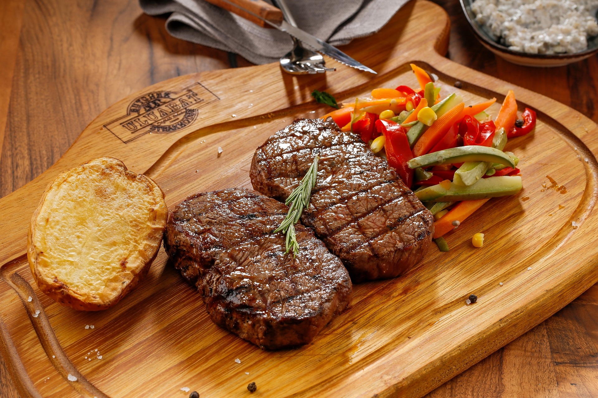
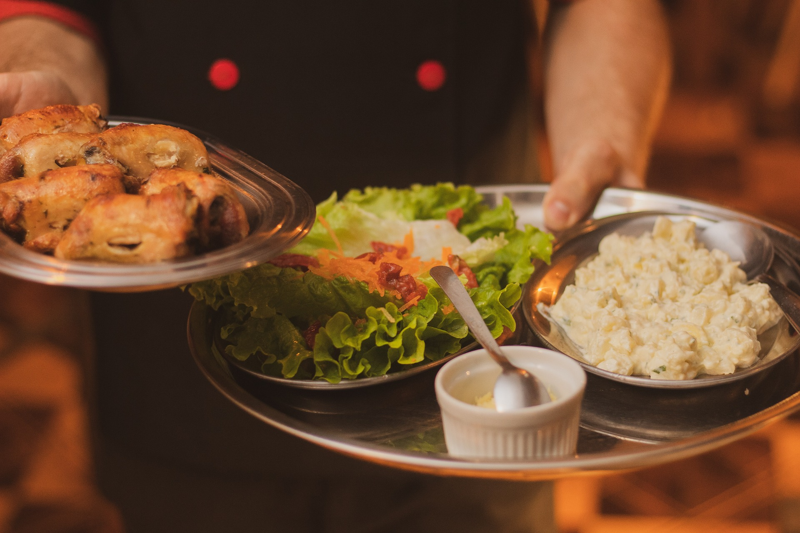
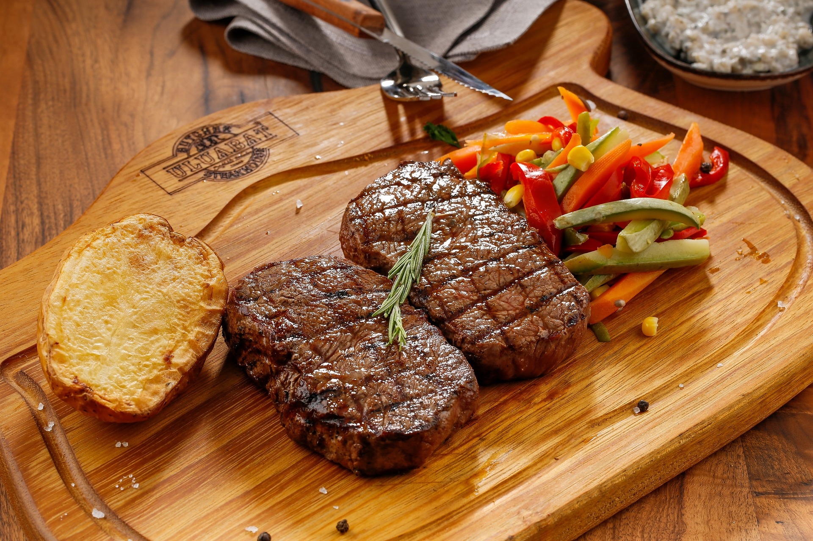
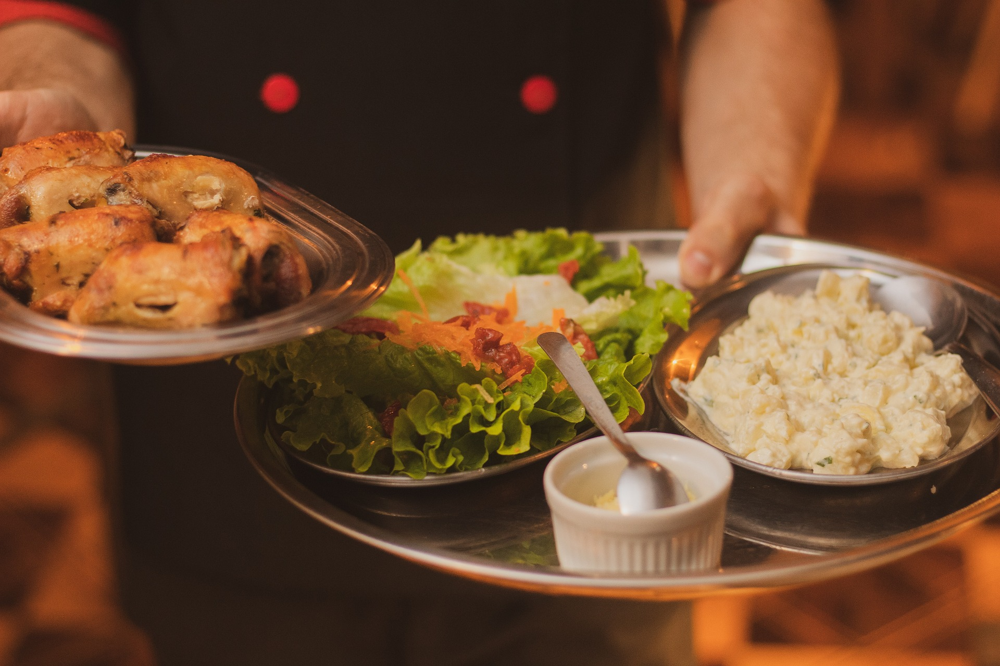
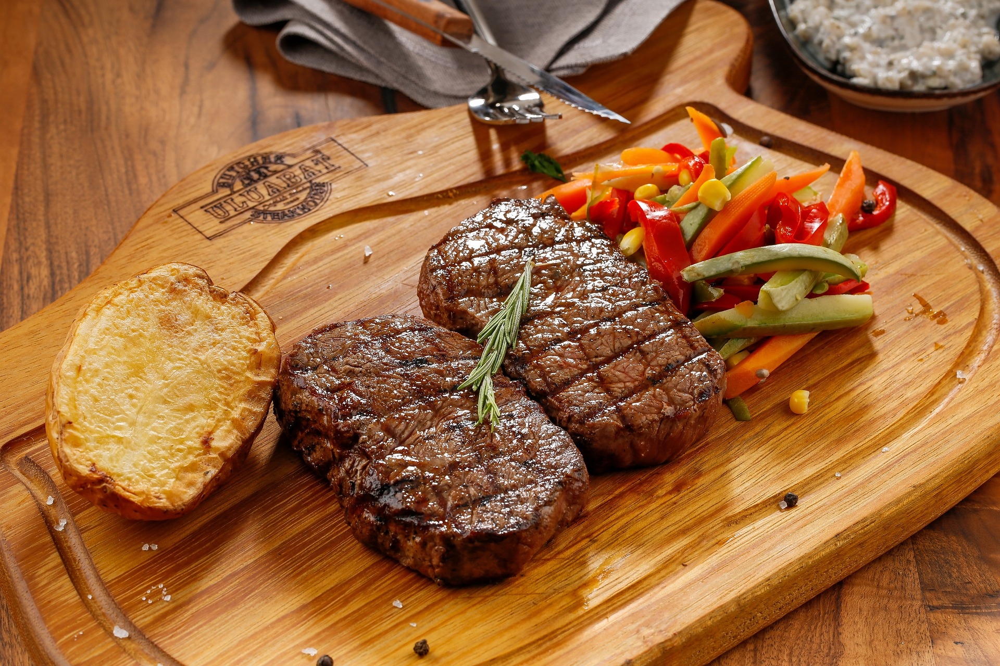
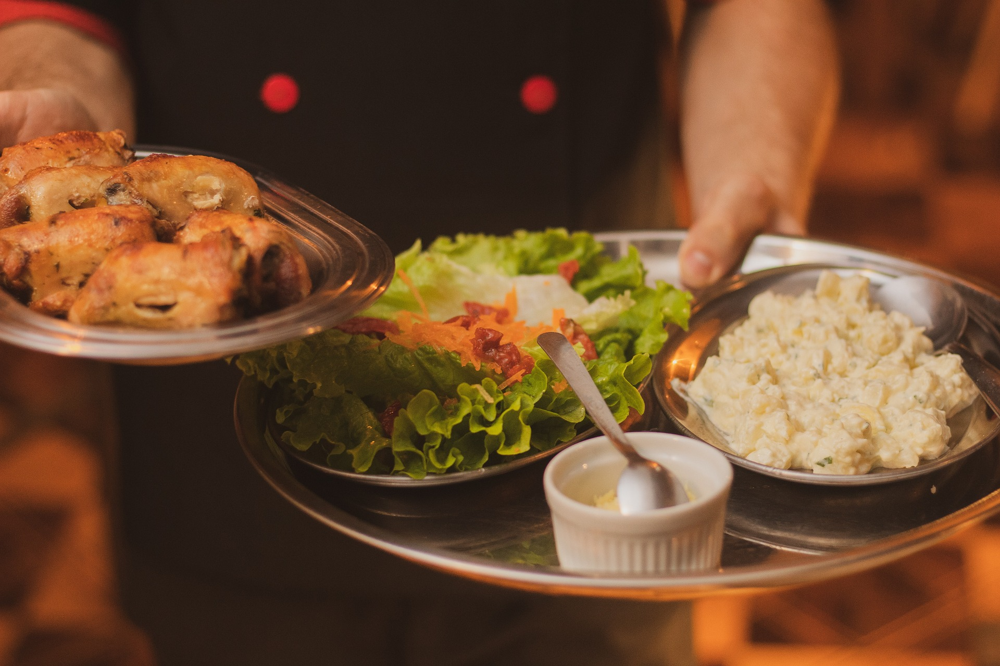
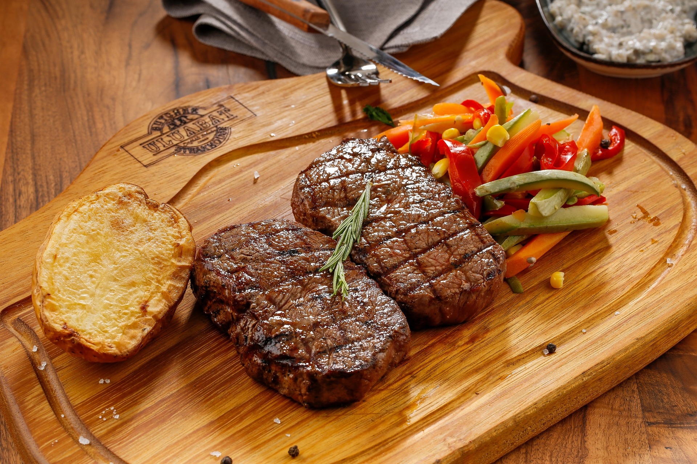
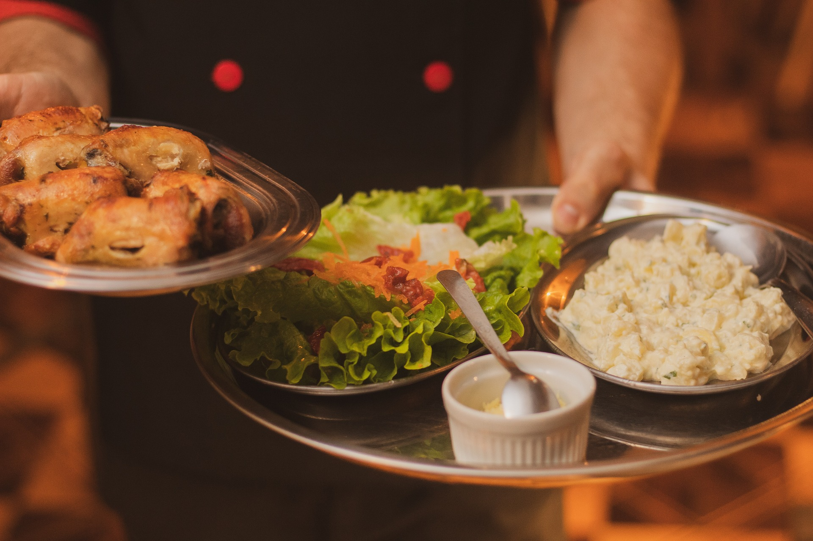

Bienvenue à L'abbracadabra
L'abbracadabra est bien plus qu'un simple restaurant.
C'est un lieu où la gastronomie raffinée se marie harmonieusement avec une atmosphère chaleureuse et charmante.
Niché au cœur d'une ruelle pittoresque,
notre établissement est un véritable refuge pour les amateurs de cuisine exquise et d'expériences mémorables.
Notre chef talentueux, inspiré par les saveurs du monde entier,
crée des plats délicieusement innovants en utilisant des ingrédients frais et de saison.
Chaque bouchée est une aventure culinaire, un voyage qui éveillera vos papilles et ravira vos sens.
Notre menu diversifié propose des options pour tous les goûts,
des plats végétariens aux délices carnivores,
le tout préparé avec passion et dévouement.
L'ambiance de L'abbracadabra est une fusion parfaite entre l'élégance et le confort.
Des lumières douces, des nappes en lin et des fleurs fraîches créent une atmosphère intime, idéale pour une soirée romantique, une célébration spéciale ou simplement une évasion gastronomique quotidienne. Notre équipe attentionnée est déterminée à rendre chaque visite inoubliable, offrant un service personnalisé et des recommandations judicieuses.
L'abbracadabra ne se contente pas de satisfaire votre palais, mais vise également à créer des souvenirs durables. Notre sélection soigneusement élaborée de vins, de cocktails artisanaux et de desserts somptueux complète l'expérience gastronomique, laissant une empreinte délicieuse dans votre mémoire.
Que vous soyez un gastronome averti à la recherche de nouvelles saveurs ou un amateur de bons moments à la recherche d'un endroit spécial, L'abbracadabra vous invite à savourer chaque instant. Réservez une table dès maintenant et laissez-vous emporter par la magie de la cuisine et de l'hospitalité exceptionnelles.
Nous sommes impatients de vous accueillir à L'abbracadabra, où chaque repas est une célébration de la bonne cuisine, du charme et de l'amour pour les détails.
Bienvenue à L'abbracadabra L'abbracadabra est bien plus qu'un simple restaurant. C'est un lieu où la gastronomie raffinée se marie harmonieusement avec une atmosphère chaleureuse et charmante. Niché au cœur d'une ruelle pittoresque, notre établissement est un véritable refuge pour les amateurs de cuisine exquise et d'expériences mémorables. Notre chef talentueux, inspiré par les saveurs du monde entier, crée des plats délicieusement innovants en utilisant des ingrédients frais et de saison. Chaque bouchée est une aventure culinaire, un voyage qui éveillera vos papilles et ravira vos sens. Notre menu diversifié propose des options pour tous les goûts, des plats végétariens aux délices carnivores, le tout préparé avec passion et dévouement. L'ambiance de L'abbracadabra est une fusion parfaite entre l'élégance et le confort. Des lumières douces, des nappes en lin et des fleurs fraîches créent une atmosphère intime, idéale pour une soirée romantique, une célébration spéciale ou simplement une évasion gastronomique quotidienne. Notre équipe attentionnée est déterminée à rendre chaque visite inoubliable, offrant un service personnalisé et des recommandations judicieuses. L'abbracadabra ne se contente pas de satisfaire votre palais, mais vise également à créer des souvenirs durables. Notre sélection soigneusement élaborée de vins, de cocktails artisanaux et de desserts somptueux complète l'expérience gastronomique, laissant une empreinte délicieuse dans votre mémoire. Que vous soyez un gastronome averti à la recherche de nouvelles saveurs ou un amateur de bons moments à la recherche d'un endroit spécial, L'abbracadabra vous invite à savourer chaque instant. Réservez une table dès maintenant et laissez-vous emporter par la magie de la cuisine et de l'hospitalité exceptionnelles. Nous sommes impatients de vous accueillir à L'abbracadabra, où chaque repas est une célébration de la bonne cuisine, du charme et de l'amour pour les détails.
Je réserve ➤